VGVSBody#
This abstract class represents a soft body modeled under the Volumetric Geometric Variable Strain (VGVS) approach of [1].
The class implements all the methods required by a Body. Concrete subclasses must define a strain basis 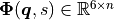 such that
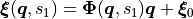
where 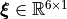 is the strain, being its stress-free value, 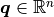 the vector of configuration variables and 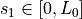 the curvilinear abscissa, with 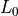 the body rest length.
Concrete subclasses can also override the radius function to model the body of the radius as follows
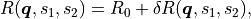
where  is the stress-free radius and 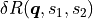 models the radius change.
is the stress-free radius and 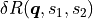 models the radius change.
See VPCC2D for a possible implementation.
- class VGVSBody#
Bases:
BodyAbstract class modeling a Volumetric continuum under the Geometric Variable Strain (GVS) approach and radius configuration variables. The internal interaction forces are modeled using a linear visco-elastic law. All volume integrals are computed in cylindrical coordinates with a Gaussian quadrature rule.
- Constructor Summary
- VGVSBody(n, Parameters)#
Construct a VGVS body.
- Parameters:
n (
double) – Number of DoF of the bodyParameters (
[double], [sym]) – Parameters of the body, specified as 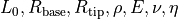 and 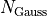
- Property Summary
- Parameters#
Vector collecting the parameters of the GVS Body as 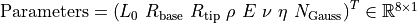, where 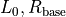 and 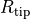 denote the body rest length, the base and tip radius, is the Young modulus, the Poisson ratio,
 the material damping coefficient, and represents the number of Gaussian points used for the computation of the kinematics and the volume integrals.
the material damping coefficient, and represents the number of Gaussian points used for the computation of the kinematics and the volume integrals.